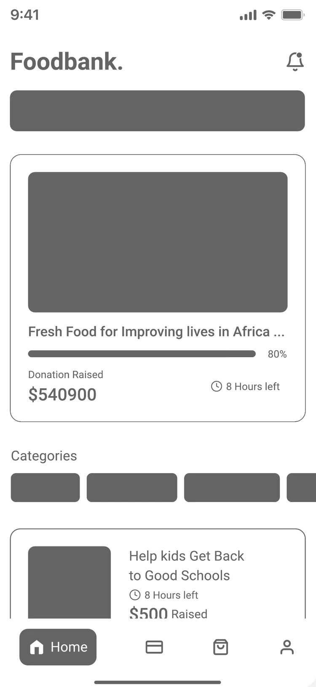
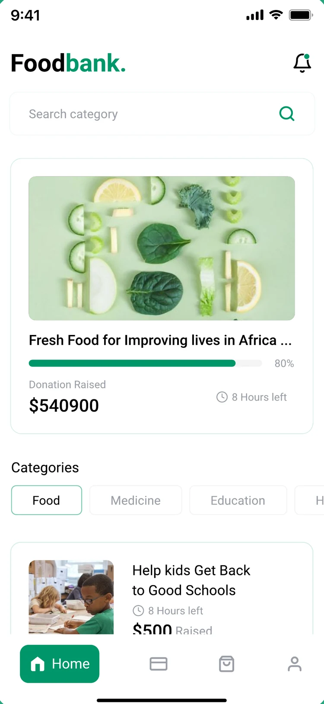
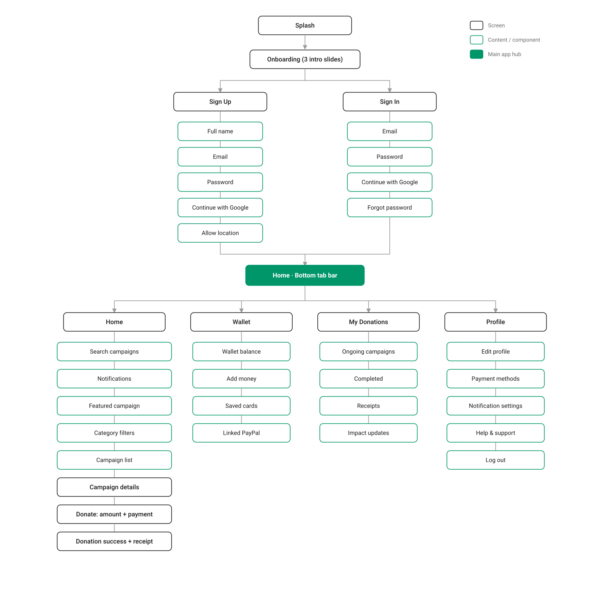
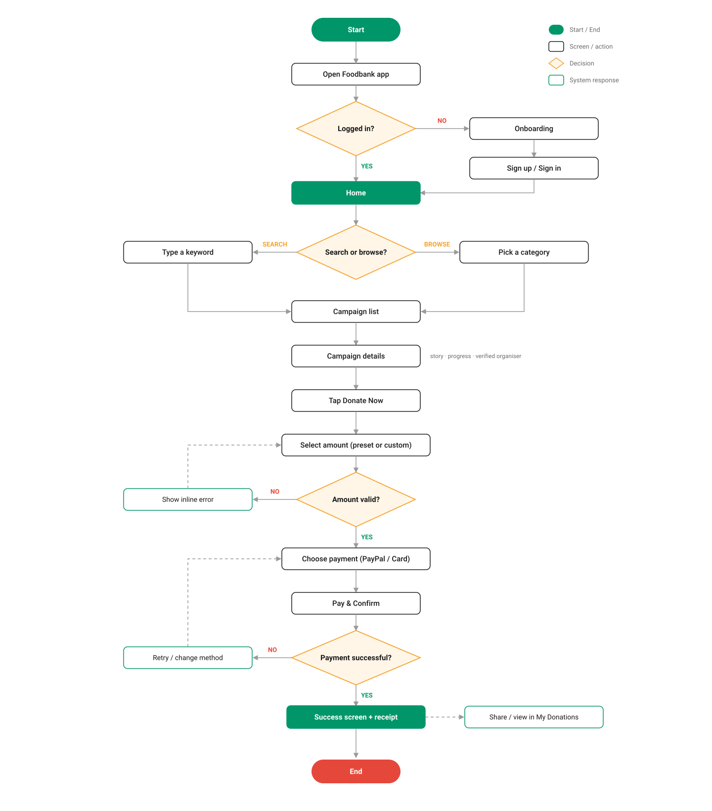
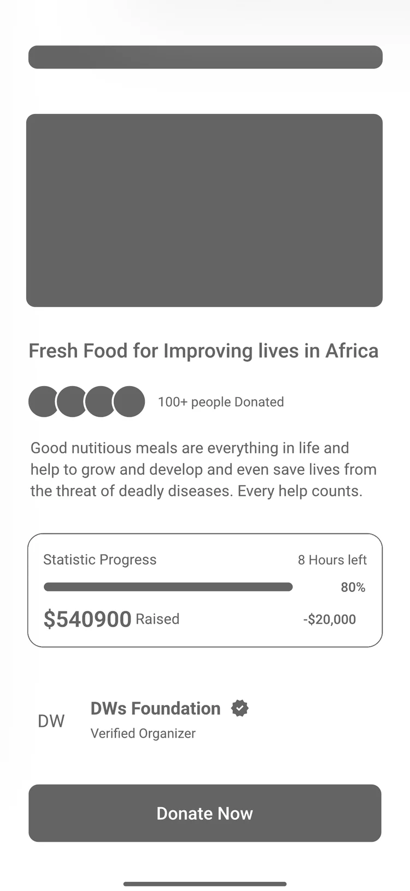
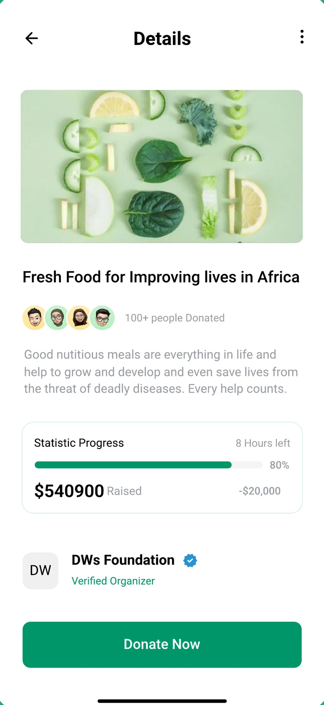
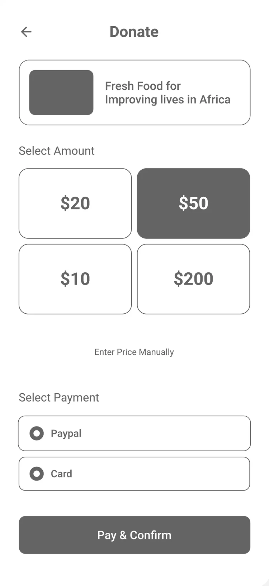
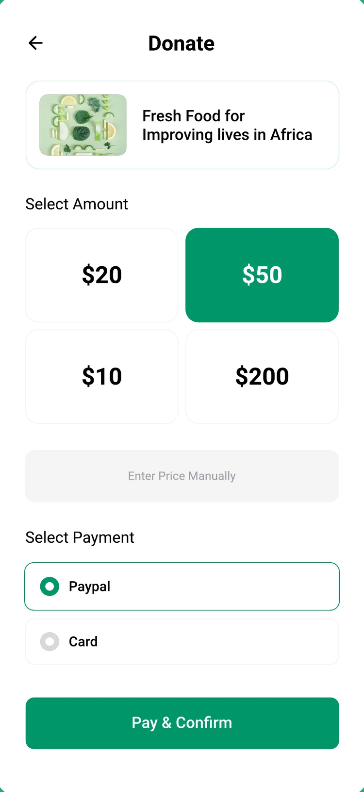

ShareTheMeal
UN World Food Programme
Works well
Giving takes a few taps, and the cost of one meal is shown clearly.
Gap Foodbank addresses
Food only, with no way to compare causes across categories.
Freelance client project · Mobile
A donation app that helps people find causes they trust and give in under a minute.


WireframeFinalDrag to compare wireframe and final
Interactive prototype
Follow the green hints on the phone, or jump to any step below. Try a custom amount of $0 to see the error state.
Overview
Foodbank lets people donate to verified food, medicine, education and housing campaigns from their phone.
The goal was more completed donations. Donors tend to hesitate at the last step: they can't tell which causes are genuine, the flow asks too much of them, and they rarely hear what their money did.
This was a freelance project for a client. I owned it end to end: turning their brief into a prioritised backlog, running weekly reviews with them, designing the flows and screens, and building a coded prototype. Every decision traces back to two goals: trust before the donor pays, and speed once they decide.
Problem → solution
Competitor review
I studied three donation apps to see what earns trust and where giving still feels hard. Each gap became a requirement on the backlog.
UN World Food Programme
Works well
Giving takes a few taps, and the cost of one meal is shown clearly.
Gap Foodbank addresses
Food only, with no way to compare causes across categories.
Crowdfunding, India
Works well
Monthly giving with preset amounts, plus monthly impact updates.
Gap Foodbank addresses
Mostly individual medical fundraisers, so trust depends on each campaign.
Giving platform, India
Works well
NGOs are vetted before listing, with instant tax receipts and impact reports.
Gap Foodbank addresses
A large catalogue that takes effort to browse on a phone.
Details from each organisation's own site, checked October 2026: ShareTheMeal, Ketto, Give.
From brief to backlog
I shaped the scope the way it would be delivered: a prioritised backlog, stories engineers could build against, and the measures that would show it worked.
Scoped with MoSCoW so the first release solves the drop-off problem and nothing else.
Each story states who it's for and why, and lists the rules a build must meet to count as done.
EpicAs a donor, I want to find a campaign I trust and give in a few taps, so that my help reaches a real cause without effort.
US-01 · Verified organiser
As a donor, I want to see who runs a campaign, so that I know my money reaches a real cause.
US-02 · Choose an amount
As a donor, I want suggested amounts, so that I don't stall deciding how much to give.
US-03 · Donation receipt
As a donor, I want proof my donation went through, so that I can trust the app next time.
The core objects and how they relate. Screens are views of these, which keeps naming and data consistent across the app.
Each measure maps to a backlog item, so testing would show which decision moved the number.
AI tools sped up production. The product calls stayed mine.
How the work ran
The client reviewed progress every week, sometimes every ten days. Each round fed back into the backlog, so the design kept moving without losing scope.
There were several rounds of changes. Each one went through the same three questions before it touched the design.
The stories say what donors want. The use case covers how the app responds, including the failure paths the flow chart loops back from.
A screen counted as done only when all of these were true.
Structure


Key screens
Hierarchy was settled in greyscale first. Colour, photography and trust cues came after.
Home
Why: donors open the app already wanting to give, so Home leads with real campaigns, not marketing. One featured campaign gives undecided donors a place to start, and search serves people who already know.
Changed from wireframe: labelled search with an icon, and a green outline on the active chip.


Details
Why: the biggest reason donors hesitate is not knowing whether a cause is genuine. So proof (who gave, how much is raised, who runs it) sits above the button, and the ask comes only after the trust.
Changed from wireframe: the verified badge and progress bar took colour, the two strongest trust cues.


Donate
Why: every extra screen in checkout is a place to drop off. Presets remove a decision, $50 gives an anchor without pressure, and putting payment on the same screen makes giving one step instead of two.
Changed from wireframe: heavy outlines became soft fills, so the selection stands out.
Design system
Neutral surfaces let campaign photos carry the emotion. Green is for action and progress, orange for urgency.
#00966AButtons, progress, active tab#F6A32DUrgency, focus ring#000000Headings and body#D2D6E2Dividers and surfaces#FF5630Invalid amount, failed payment#FFAB00Campaign ending soon#38CB89Donation confirmed#377DFFVerified badgePrimary and secondary, five states each, at L 18, S 14 and XS 12 text sizes.
Why components: the client reviewed every week, so changes came often. Building every screen from one set of components meant a change made once updated everywhere, and new screens stayed consistent.
56 / 6432 / 3616 / 2414 / 2012 / 16Headings in Made Outer Sans, body and fields in Roboto.
Why: a bold geometric display face so campaign titles read with confidence, and Roboto for amounts and form fields, where numbers must be read at a glance.
Results
The NGO approved the design and launched it. The numbers are what the client reported back. I didn't have access to their analytics.
Why these matter: repeat donors was one of the three measures I set in the backlog. Seeing them return showed the receipts and trust cues were doing their job.
What I learnt
The verified badge and live progress persuade more than polish does.
Merging amount and payment simplified checkout more than any visual tweak.
Holding recurring giving for later kept release 1 focused on the one problem that mattered.